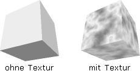

Hilfe

Parameter
| datei$ | Name der Grafikdatei (evtl. mit Pfad) |
| modus% |
Optionale Textur-Einstellungen:
+1=Color +2=Alpha +4=Masked +8=Mipmapped +16=Clamp U +32=Clamp V +64=Spherical Reflection Map +128=Cubic Environment Mapping +256=Speichert Textur in VRAM +512=HighColor-Textur |
| breite% | Breite jeder Textur in Pixel |
| hoehe% | Höhe jeder Textur in Pixel |
| start% | Startframe (normalerweise 0) |
| anzahl% | Anzahl der Texturen-Frames |
Rückgabewert
Identität der geladenen Textur. Wenn eine Null zurückgeliefert wird, dann konnte die Grafikdatei nicht geladen werden.
Beschreibung
Diese Anweisung lädt eine animierte Textur. Es funktioniert eigentlich wie LoadTexture , nur enthält dieses Bild gleich mehrere kleine Texturteile nebeneinander. Jede Textur hat die gleiche Breite und Höhe. Es dürfen auch keine Lücken zwischen den Bildern vorkommen. Wenn man die Animation mit EntityTexture zuweist, dann muss man das Animation-Frame angeben.
, nur enthält dieses Bild gleich mehrere kleine Texturteile nebeneinander. Jede Textur hat die gleiche Breite und Höhe. Es dürfen auch keine Lücken zwischen den Bildern vorkommen. Wenn man die Animation mit EntityTexture zuweist, dann muss man das Animation-Frame angeben.
BlitzBasic kann BMP-, JPG und PNG-Bilder laden.
Der optionale Parameter "modus%" stellt Textureffekte ein. Mehrere Effekte können kombiniert werden, indem die Zahlen addiert werden.
Hier eine kurze Beschreibung:
[1] Color Map = Die Textur wird so eingezeichnet wie man die sieht
[2] Alpha Map = Die Textur benutzt Alpha Map für Transparenz. Wenn Alpha Map nicht vorhanden ist, dann erscheinen dunkle Stellen transparenter.
[4] Masked = Schwarze Flächen werden nicht eingezeichnet.
[8] Mipmapped = für weite Entfernungen wird eine Textur mit weniger Details benutzt.
[16] Clamp U = Textur-Koordinate U wird fixiert.
[32] Clamp V = Textur-Koordinate V wird fixiert.
[64] Spherical Reflection Map = Reflektionseffekt
[128] Cubic Environment Mapping = Echtzeitreflektion
[256] Speichert Textur in VRAM = schneller
[512] Erstellt HighColor-Textur. So kann die Textur auch bei 16-Bit Farbtiefe weiterhin Alpha-Informationen enthalten.
-Geschwindigkeitsverlust
-Unnötiger Speicherverbrauch
-Qualitätsverlust

Zusatzinformation
Beispiel
Standardbeispiel:
SetBuffer BackBuffer()
camera = CreateCamera()
light = CreateLight()
RotateEntity light, 90, 0, 0
cube = CreateCube()
PositionEntity cube, 0, 0, 5
tex = LoadAnimTexture("bild.bmp", 1, 32, 32, 0, 5)
EntityTexture cube, tex
While Not KeyHit(1)
pitch# = 0
yaw# = 0
roll# = 0
If KeyDown(208) = 1 Then pitch# = - 1
If KeyDown(200) = 1 Then pitch# = 1
If KeyDown(203) = 1 Then yaw# = - 1
If KeyDown(205) = 1 Then yaw# = 1
If KeyDown(45) = 1 Then roll# = - 1
If KeyDown(44) = 1 Then roll# = 1
TurnEntity cube, pitch#, yaw#, roll#
RenderWorld
Flip
Wend
End
Siehe auch
CreateTexture, FreeTexture, LoadTexture, TextureBlend, TextureBuffer, TextureHeight, TextureWidth